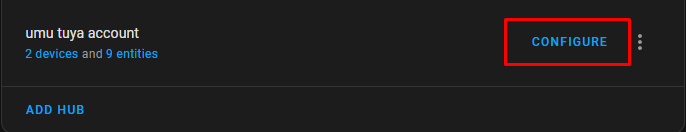
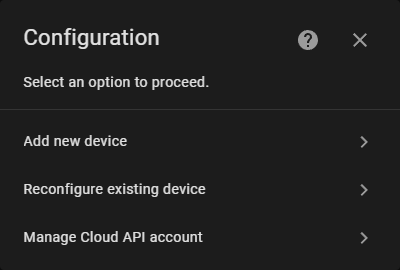
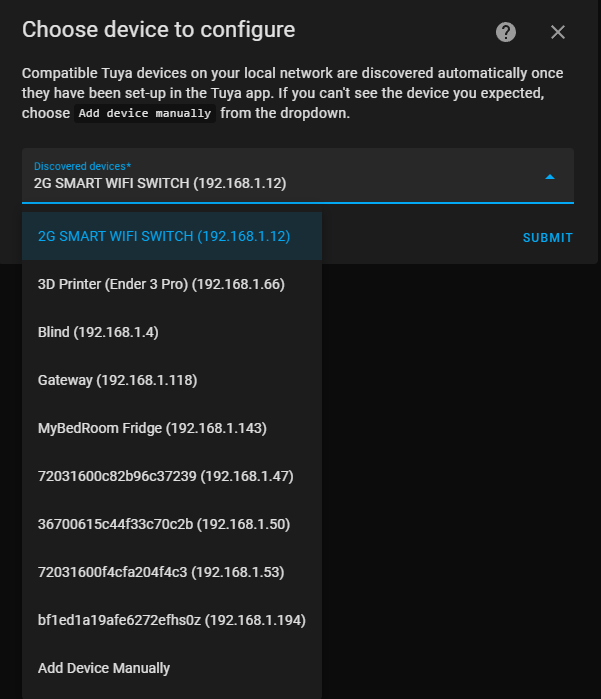
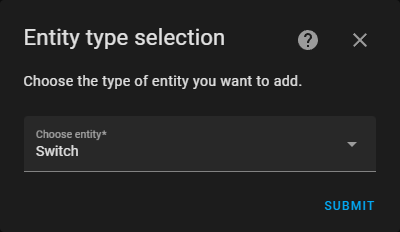
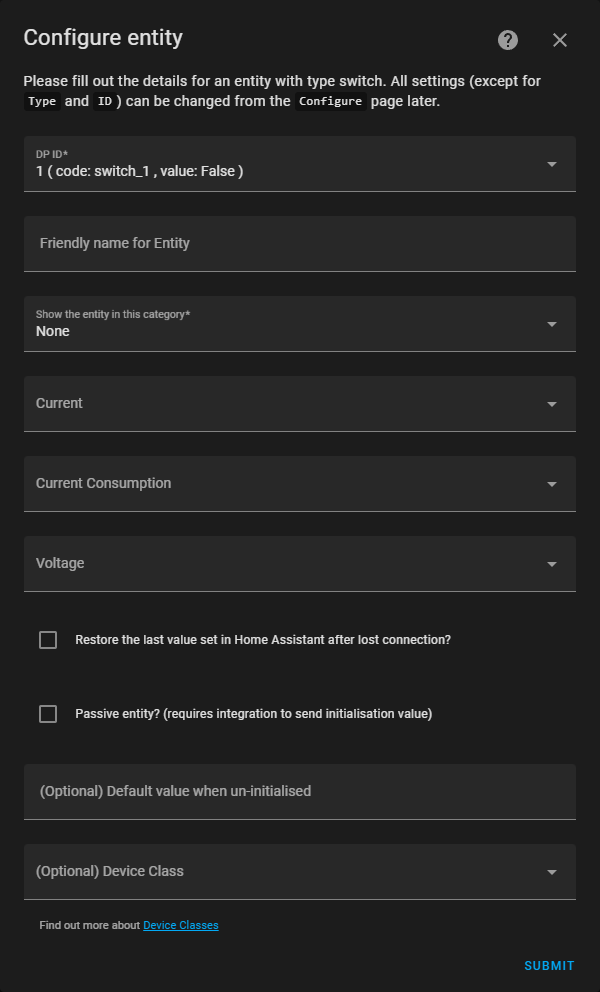
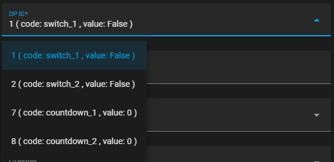
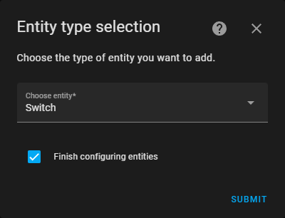

Add new devices
Before You Start
You must have your device's localkey and ID to add your device to LocalTuya. The easiest way is to configure the Cloud API account in the integration.
If you want to obtain the id and localkey without configuring the cloud API, good guides are available for
TuyaAPI Setup,
TinyTuya,
or MarkVideo.
Important
Before adding any device, ensure that Smart Life and Tuya Smart apps are closed on your phones. Devices shouldn't be added to different local integrations as some Tuya devices can only accept one local connection at a time.
After setting up the integration, you can now manage your devices by adding or editing them.
Go to hub Configure (1) a menu will show up (2) Choose Add new device
- 
- "The
Reconfigure existing deviceoption will appear if there are devices that have already been set up."

Discovery
By default, LocalTuya includes a discovery feature that scans for Tuya devices within the local network and lists them in the config flow. However, this function requires Home Assistant to be connected to the same network as the Tuya devices and to have the same subnets.
-
Selecting
Add new devicewill display a new page with the listed discovered devices (1)
Select the device you wish to configure, then click onSubmit.- If the device is configured on a Tuya account, the ID will be replaced with the name. If not, it will remain as
... (IP)

- If the device is configured on a Tuya account, the ID will be replaced with the name. If not, it will remain as
-
Configure device: Fill in the fields that are still missing and arerequiredDevice Name
A name for the device, for example,
Bedroom 2GFollowing this, entities ID will be associated with the device name. e.g. an entity namedswitch 1will have anentity idswitch.bedroom_2g_switch_1.IP
The device's IP Address e.g.,
192.168.1.55.This is automatically inserted if you choose a discovered deviceDevice ID
The device ID See top note.
Automatically inserted if you choose a discovered deviceLocal Key
The localkey for the device. See top note
Automatically inserted if the cloud API is configured and the device is added to the account(optional) Enable Debug
Device will send
Debug messagesin logs.Use it if you have issues and want to track them
You need to enable logger debug inconfiguration.yamlfor localtuya.
(optional) Scan Interval
Only needed if energy/power values are not updating frequently enough by default.
Values less than 10 seconds may cause stability issues(Optional) Manual DPS
Needed if the device doesn't advertise the DPS correctly until the entity has been properly initialized. This setting can often be avoided by first connecting/initializing the device with the Tuya App, then closing the app, and then adding the device to the integration.
Note: Any DPS added using this option will have a-1value during setup e.g.20,21,22(Optional) DPIDs Reset
Used when a device doesn't respond to any Tuya commands after a power cycle, but can be connected to (zombie state). This scenario mostly occurs when the device is blocked from accessing the internet. The DPids will vary between devices, but typically "18,19,20" is used. If the wrong entries are added here, then the device may not come out of the zombie state. Typically only sensor DPIDs entered here.
(optional) Device Sleep Time
Only needed if the device has low-power mode and is disconnected from the network. FAQ
If the device is disconnected and exceeds this time, it will be considered offline(Optional) Node ID or CID
Node IDalso known asCIDonly for sub devices that work throughGatewayse.g.ZigBeeandBLEDevices. -
After a successful connection, it's time to set up the entities.
Configure device methods
How does localtuya work
Before setting up device entities, let me explain how LocalTuya control devices: Tuya devices have different functions such as Switch 1, Switch 2, and more, each identified by a DP ID. LocalTuya configures entities by using and managing the function values using their respective DP IDs.
LocalTuya will pull these functions for you to set them up as Home Assistant entities
Discover device entities automatically
Automatic setup is only supported for CloudAPI setup.
Note: It's possible to tweak the entities config later after auto configure.
Configure device entities manually
Below, I used 2 Gang Tuya Switch as an example
This option will work for everyone, but it's more advanced.
-
Selecting the manual setup option will bring up a new page listing supported platforms
platforms(1) Each platform has its unique configuration page with different sets of configuration fields.
- 
-
Configure
switch platform(1)- 
DPfields (1)The DP fields will display all the DP IDs reported by the device along with their respective values (3)
Taking1 (code: switch_1, value: False)as an example
DP1refers to1st gang on my switch, it'soffdue to its value being False (2)Multi
DPFieldsSome platform configurations consist of multiple DP fields. For example, in the
climate
there are DPs to toggling on and off, as well as for setting the temperature and change mode- 
DP 1Switch 1 isOFF[1st gang]
DP 2Switch 2 isOFF[2nd gang]
DP 7Switch 1 Timer is0
DP 8Switch 2 Timer is0
Code only shows if cloud setup
Most DP fields are optional, but the ID is always required. For example, select the Switch platform and set the ID to 1. This will configure a switch entity that controls the
first Gang switch
-
When submitting the first entity, if there are additional unconfigured DP IDs, it will prompt you to either complete the process or add more entities (1)
- 
I unchecked
Finish configuring entitiesand repeatedstep 2to add anotherswitchentity that controlsID 2<-2nd Gang switch -
After completing the addition of entities, check
Finish configuring entitiesand submit to add your device and entities
Use saved template
Templates
You can import a ready-to-go device configuration through the 'add device' process. This feature is useful for creating backups, sharing configurations,
or setting up similar devices. All templates stored in the 'templates' directory will be listed in the 'Use saved template' step.
Templates directory located in custom_components/localtuya/templates
Create templates
There are two ways to create templates
- Export a configured device from the Reconfigure existing device step
- Manually write the configuration
YAMLfileNot Recommended
Cover template example
- cover:
commands_set: open_close_stop
current_position_dp: '3'
entity_category: None
friendly_name: Blind
id: '1'
platform: cover
position_inverted: false
positioning_mode: position
set_position_dp: '2'
span_time: 25.0
- select:
entity_category: config
friendly_name: Motor Direction
id: '5'
is_passive_entity: false
platform: select
restore_on_reconnect: false
select_options:
back: Back
forward: Forward
- select:
entity_category: config
friendly_name: Motor Mode
id: '106'
is_passive_entity: false
platform: select
restore_on_reconnect: false
select_options:
contiuation: Auto
point: Manual
- binary_sensor:
device_class: problem
entity_category: diagnostic
friendly_name: Fault
id: '12'
platform: binary_sensor
state_on: '1'